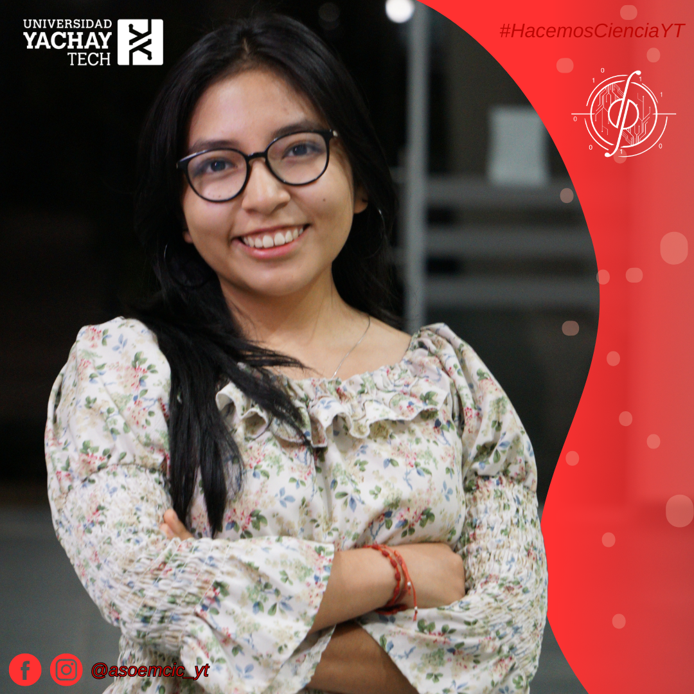
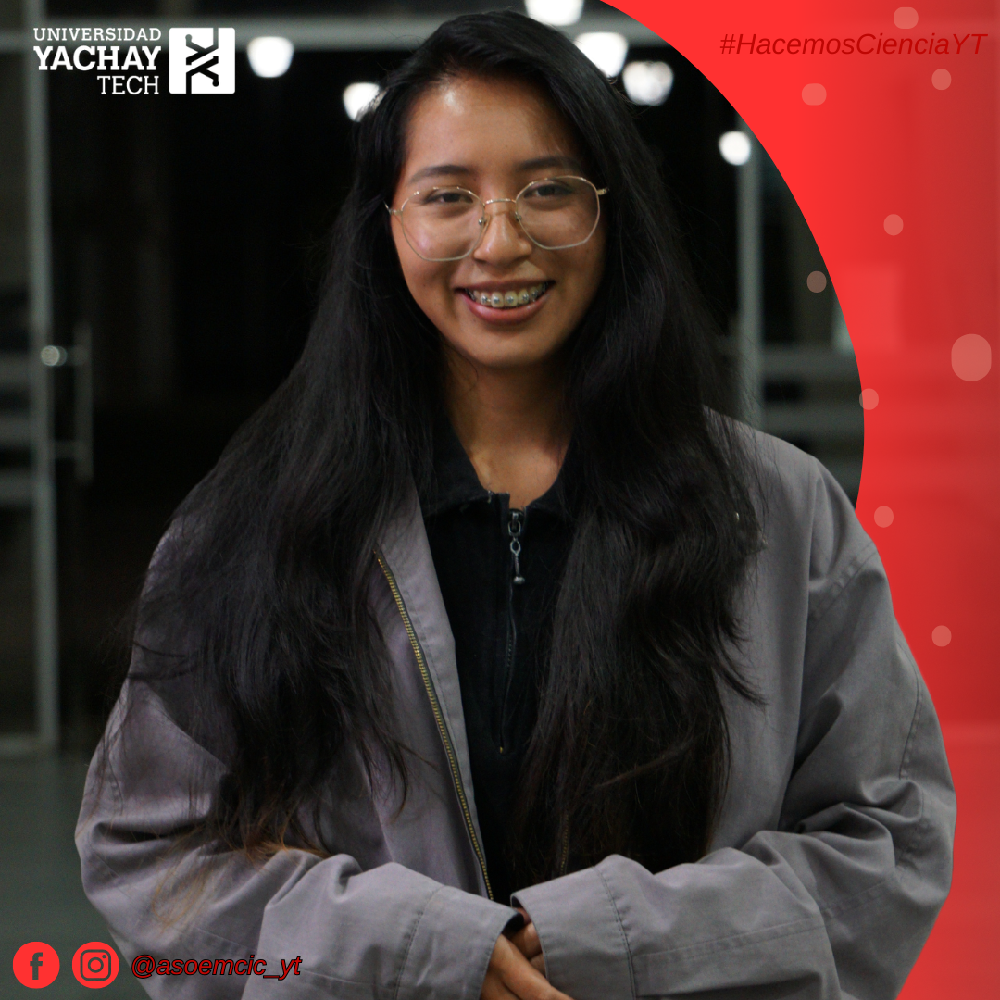

Presidencia
PresidenciaEdwin Ezequiel Hurtado Almeida
Representante legal de la AEMCiCD. Coordina la dirección general, preside sesiones e impulsa proyectos institucionales.
Conoce a quienes han organizado y representado a la asociación desde su fundación.
Inicio de gestión: 1.er semestre de 2026. Periodo legal actualizado: 2 de mayo de 2026 al 1 de mayo de 2027.
PresidenciaRepresentante legal de la AEMCiCD. Coordina la dirección general, preside sesiones e impulsa proyectos institucionales.
 Vicepresidencia
VicepresidenciaApoya la coordinación estratégica, el relacionamiento institucional y la supervisión de actividades.
 Secretaría General
Secretaría GeneralOrganiza actas, convocatorias, archivo documental y registros institucionales.
 Tesorería
TesoreríaGestiona registros financieros, presupuestos, informes económicos y sostenibilidad operativa.
 Comunicación
ComunicaciónCoordina la imagen pública, difusión, redes sociales y comunicación institucional.
Registro histórico de quienes fundaron y dieron continuidad a la AEMCiC.
Esta directiva inició la Asociación de Estudiantes de Matemática y Ciencias Computacionales, antes de la apertura de la carrera de Ciencia de Datos.

TesoreríaDaniela Analuisa
SecretaríaMayte OtavaloEsta directiva ejerció durante un periodo y dio continuidad a la organización antes de la directiva vigente.
 SecretaríaIsmael Cifuentes
SecretaríaIsmael Cifuentes